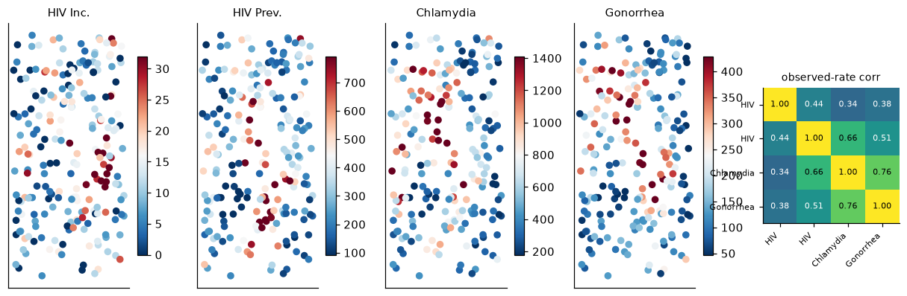
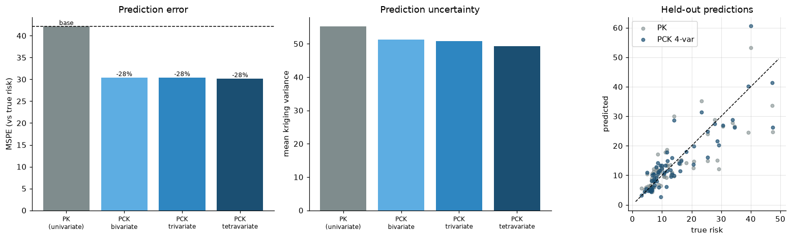
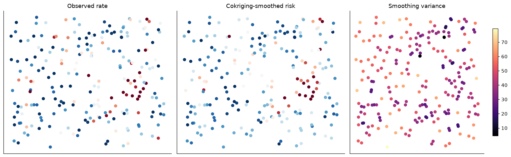
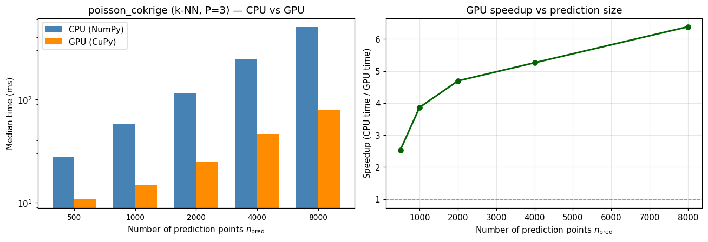

Dataset: Simulated co-regionalised disease counts (217 units) + US Northeast county diabetes (data/diabetes_northeast.shp / .csv, 217 counties) Target: Latent disease risk \(R_t\) — HIV-like rare counts in the simulation; diagnosed diabetes (Diabetes_count / POP_Total) in the application, with physical inactivity and obesity as auxiliaries Library:pygstat.multi_poisson_kriging — Linear Model of Coregionalization (LMC) Poisson cokriging (Payares-Garcia et al., 2024)
Mapping disease risk from areal counts is hampered by three things: counts are discrete and often over-dispersed; dividing counts by population gives heavy-tailed, unreliable rates (the small-number problem); and a single disease rarely carries enough signal on its own. Multivariate Poisson cokriging addresses all three by (i) treating each count as Poisson, (ii) modelling several spatially co-regionalised diseases jointly through a Linear Model of Coregionalization (LMC), and (iii) predicting or smoothing a target disease’s risk by borrowing strength from correlated auxiliary diseases.
pygstat.multi_poisson_kriging is a Python conversion of the R implementation of Payares-Garcia et al. (2024). This notebook develops the mathematics, validates it on a controlled simulation, and applies it to diabetes in the US Northeast using physical inactivity and obesity as auxiliaries.
Step
What we do
Simulation
Draw 4 co-regionalised risk fields; Poisson counts on a shared population
Fit a valid coregionalization matrix \(B\succeq 0\)
Prediction
Hold out 30% of the target; compare PK vs bi/tri/tetra-variate PCK
Application
Northeast diabetes, with inactivity and obesity as auxiliaries
CPU / GPU
Time k-NN poisson_cokrige on CPU vs GPU using USA diabetes counties (usa_diabetes_data.csv + US_COUNTY.shp, \(n=3{,}107\))
By the end you will have a validated LMC cokriging predictor, a Northeast diabetes map that borrows strength from inactivity and obesity, and a CPU vs GPU timing of the batched k-NN cokriging solve on the national county set.
2. Theory - Poisson Data Model
We follow Payares-Garcia et al. (2024). Let there be \(\mathcal{L}\) diseases indexed by \(\ell,\kappa\in\{1,\dots,\mathcal{L}\}\), observed over \(N\) areal units with (population-weighted) centroids \(s_1,\dots,s_N\). Unit \(s_i\) has a population at risk \(n(s_i)\) shared across diseases. Write \(h=\lVert s_i-s_j\rVert\) and let \(\varrho\) be the rate base (e.g. \(\varrho=10^5\) for rates per 100,000).
Each count is conditionally Poisson given the latent risk\(R_\ell\):
The sample rate \(z_\ell\) is an unbiased but noisy estimator of \(\varrho R_\ell\), and its sampling variance is inversely proportional to the population,
Small populations therefore give unreliable rates. The goal is to predict the target risk \(R_t\) at an unsampled \(s_0\), or to smooth it at observed units, filtering this Poisson noise.
3. Theory - Population-Weighted Semivariograms
Spatial dependence within and between diseases is measured with population-weighted, bias-corrected estimators (eqs. 12–13 of the paper). For pairs \((i,j)\) whose separation falls in lag class \(N(h)\), and with the inverse-variance weights
The weights \(w_{ij}\) homogenise the variance of the sample rates, while the bias terms\(m^{*}_{\ell}\) and \(m_{\ell\kappa}\) subtract the Poisson noise induced by population variability — without them the estimated sill is inflated by pure sampling noise. This is exactly what pck_variogram and pck_crossvariogram compute.
4. Theory - Linear Model of Coregionalization
To obtain a valid joint covariance for every pair of diseases, the direct and cross structures are fitted simultaneously with an LMC: a sum of \(S\) basic, licit correlation structures \(g_u\) (the paper uses a nested exponential + spherical; this module uses a single exponential, \(S=1\)),
with coregionalization matrices\(B_u=\big[b^{u}_{\ell\kappa}\big]_{\mathcal L\times\mathcal L}\). The model is a valid multivariate covariance iff every \(B_u\) is symmetric positive semidefinite; fit_lmc estimates \(B_u\) by weighted least squares and then projects it onto the nearest PSD matrix. Covariance and semivariogram are linked by \(\gamma_{\ell\kappa}(h)=C_{\ell\kappa}(0)-C_{\ell\kappa}(h)\), and for a single structure the sill is \(C_{\ell\kappa}(0)=b_{\ell\kappa}=B_{\ell\kappa}\). Basic structures used here:
where \(k_\ell\) is the number of \(\ell\)-observations used and \(\lambda_\ell(s_i)\) are the cokriging weights (negative predictions are truncated at \(0\)). The Poisson shared risk that couples diseases \(\ell\) and \(\kappa\) is modelled, in the spirit of Kawamura’s bivariate Poisson, as
with \(\rho_{\ell\kappa}\) the Poisson correlation (shared_risk).
The weights minimise the prediction variance subject to unbiasedness. This yields a linear system of \(\big(\sum_{\ell}k_\ell+\mathcal L\big)\) equations in the weights \(\lambda_\ell(s_i)\) and \(\mathcal L\) Lagrange multipliers \(\mu_\ell\) (eq. 9): for every disease \(\ell\) and observation \(s_i\),
The target disease’s weights sum to one; each auxiliary’s weights sum to zero. The bias / reliability terms\(\Delta_{\ell\kappa}\), added to the block diagonal, encode \(\mathrm{Var}[z]\propto 1/n\):
and \(\Delta=0\) off the diagonal / for non-co-located pairs. Assembling the blocks \(C_{\ell\kappa}\) plus the constraint rows/columns gives the matrix that poisson_cokrige builds and inverts.
6. Theory - Prediction Error Variance
With \(c_0\) the right-hand-side covariance vector and \(\lambda\) the solved weights (including the target Lagrange multiplier \(\mu_t\)), the cokriging variance is (eqs. 10–11)
Because auxiliaries add information, this variance is systematically smaller than the univariate Poisson-kriging variance.
Special cases
Univariate Poisson kriging (\(\mathcal L=1\)): the system collapses to ordinary Poisson kriging with a single reliability term \(m^{*}/n(s_i)\) (poisson_krige).
Smoothing (noise filtering): taking the prediction locations to be the observed units and removing each in turn (leave-one-out) yields denoised risk estimates instead of interpolated ones.
Equation
Quantity
Module implementation
§3 (12)
direct Poisson semivariogram \(\hat\gamma_{\ell\ell}\)
poisson_cokrige in k-nearest-neighbor mode (number_of_neighbors=k) solves a local Poisson cokriging system at every prediction point. Every point has the same neighbor count \(k\) and \(P\) co-located variables, so pygstat stacks the systems into one (n_{\mathrm{pred}}, P k + P, P k + P) batched xp.linalg.solve — NumPy on CPU, CuPy on GPU. Pass use_gpu='auto'|True|False.
Argument / mode
What it controls
number_of_neighbors
Local k-NN. Required for the batched GPU path.
use_gpu
Batched k-NN cokriging solve (NumPy or CuPy).
default (no k)
Global system over every known area; stays on CPU.
smooth=True
Leave-one-out of a single area; stays on CPU.
use_gpu is:
Value
Behaviour
'auto' (default)
GPU when CuPy can run a kernel on this card. Falls back to CPU otherwise.
True
Force GPU. Warns and falls back to CPU if CuPy is missing or cannot run a kernel.
False
Always CPU (NumPy/SciPy).
This notebook probes the GPU once with cupy_gpu_usable() and stores the result in USE_GPU. The simulation and Northeast maps in §8–19 use the global / LOO CPU path. §20 times the k-NN GPU path on USA county diabetes (\(n = 3{,}107\), \(P=3\)).
Install CuPy with pip install pygstat[gpu] (CUDA 11) or pip install cupy-cuda12x for CUDA 12.
Code
%matplotlib inlineimport sys, os, warningswarnings.filterwarnings("ignore")sys.path.insert(0, os.path.abspath("../src"))import pygstatimport numpy as npimport pandas as pdimport geopandas as gpdimport matplotlib.pyplot as pltfrom matplotlib.gridspec import GridSpecfrom matplotlib.colors import Normalizefrom scipy.optimize import least_squaresfrom pygstat import multi_poisson_kriging as mpkplt.rcParams.update({"figure.dpi":110, "font.size":10,"axes.spines.top":False, "axes.spines.right":False})RNG = np.random.default_rng(512) # R used seed = 512POP_RATE =100_000print("module functions:", ", ".join(mpk.__all__))print("pygstat version:", pygstat.__version__)from pygstat.utils.backend import CUPY_AVAILABLE, cupy_gpu_usable# ── Poisson cokriging k-NN batched solve: CPU / GPU dispatch (CuPy) ────────────# cupy_gpu_usable() runs a real kernel (not just `import cupy`). Older cards can# import CuPy and still fail at compile time; those stay on CPU.USE_GPU = cupy_gpu_usable()if USE_GPU:import cupy as cpprint(f"CuPy : {cp.__version__}")try: name = cp.cuda.runtime.getDeviceProperties(0)["name"]ifisinstance(name, bytes): name = name.decode()print(f"GPU (CuPy) : {name}")exceptException:print("GPU (CuPy) : available")print("Backend : GPU (CuPy) — poisson_cokrige k-NN batched solve on GPU")else:if CUPY_AVAILABLE:import cupy as cpprint(f"CuPy : {cp.__version__} (installed, but cannot run a kernel on this GPU/CUDA setup)")else:print("CuPy : not installed (pip install pygstat[gpu] or cupy-cuda12x)")print("Backend : CPU (NumPy)")print(f"use_gpu : {USE_GPU}")
Mirroring the paper’s simulation: draw \(P=4\) co-regionalised latent Gaussian risk fields on an irregular set of locations (via \(\mathrm{Cov}=B\otimes\rho\)), convert to per-100k risks, and draw Poisson counts on a shared population. The target is an HIV-incidence-like disease with very low counts (deliberately noisy — the case cokriging is designed to help).
mean counts / disease: [ 7.4 194.5 360.3 103.3]
observed-rate corr with target: [1. 0.44 0.34 0.38]
9. Simulated Risk Surfaces
Code
fig = plt.figure(figsize=(14, 4.2))gs = GridSpec(1, 5, width_ratios=[1,1,1,1,0.9], wspace=0.25)for l inrange(P): ax = fig.add_subplot(gs[0, l]) s = ax.scatter(cent[:,0], cent[:,1], c=rates_obs[l], s=28, cmap="RdBu_r", vmin=np.percentile(rates_obs[l],5), vmax=np.percentile(rates_obs[l],95)) ax.set_title(names[l], fontsize=10); ax.set_xticks([]); ax.set_yticks([]) plt.colorbar(s, ax=ax, shrink=.75)axc = fig.add_subplot(gs[0, 4])C = np.corrcoef(rates_obs)im = axc.imshow(C, cmap="viridis", vmin=0, vmax=1)axc.set_xticks(range(P)); axc.set_yticks(range(P))axc.set_xticklabels([n.split()[0] for n in names], rotation=45, ha="right", fontsize=7)axc.set_yticklabels([n.split()[0] for n in names], fontsize=7)for i inrange(P):for k inrange(P): axc.text(k, i, f"{C[i,k]:.2f}", ha="center", va="center", color="w"if C[i,k] <0.6else"k", fontsize=7)axc.set_title("observed-rate corr", fontsize=9)plt.tight_layout(); plt.show()

10. Empirical Direct and Cross Semivariograms
pck_variogram (direct) and pck_crossvariogram (cross) implement the population-weighted, Poisson-bias-corrected estimators. Shared risks \(R_{lk}=\rho_{lk}\sqrt{R_l R_k}\) feed the cross-variogram bias term.
Code
maxd = D.max() *0.5direct_vars = [mpk.pck_variogram(cent, counts[l], pop, POP_RATE, maxd, 12)for l inrange(P)]cross_pairs = [(l, k) for l inrange(P) for k inrange(l+1, P)]rho_lk, shared_mean, cross_vars = {}, {}, []for (l, k) in cross_pairs: rho =max(np.corrcoef(rates_obs[l], rates_obs[k])[0,1], 0.01) r = mpk.shared_risk(rates_obs[l], rates_obs[k], rho) rho_lk[(l,k)] = rho; shared_mean[(l,k)] =float(np.mean(r)) cross_vars.append(mpk.pck_crossvariogram(cent, counts[l], counts[k], pop, r, POP_RATE, maxd, 12))def fit_exp(lags, gam, npv): ok = np.isfinite(gam) & (gam >=0); lags, gam, npv = lags[ok], gam[ok], npv[ok] s0 = gam.max() sol = least_squares(lambda p: (p[0]*(1-np.exp(-lags/p[1]))-gam)*np.sqrt(npv), [s0, lags[len(lags)//2]], bounds=([0,lags.min()],[3*s0,lags.max()]))returnfloat(sol.x[0]), float(sol.x[1])range_common = fit_exp(*direct_vars[target])[1]print(f"common range fit to target direct variogram: {range_common:.0f} km")
common range fit to target direct variogram: 31 km
11. Fit the Linear Model of Coregionalization
fit_lmc estimates each \(B_{lk}\) by weighted least squares at the common range, then projects \(B\) onto the nearest positive-semidefinite matrix (a valid LMC). The classic coregionalization display shows direct semivariograms on the diagonal and cross semivariograms off it, with the fitted LMC overlaid.
Hold out 30% of the target’s locations and predict them with univariate Poisson kriging (PK) and bi/tri/tetra-variate cokriging (PCK). Following the paper’s simulation protocol, predictions are scored against the known latent risk (which filters out the irreducible Poisson noise that dominates a rare outcome like HIV incidence).
Code
n_hold =int(0.30* N)hold = np.sort(RNG.choice(N, n_hold, replace=False))mask = np.ones(N, bool); mask[hold] =Falsecoords_hold = cent[hold]truth = rates_true[target][hold] # known latent risk (simulation)# univariate PK baseline, fit to the target's own direct variogramsill_pk, range_pk = fit_exp(*mpk.pck_variogram(cent[mask], counts[target][mask], pop[mask], POP_RATE, maxd, 12))pk = mpk.poisson_krige(dict(x=cent[mask,0], y=cent[mask,1], cases=counts[target][mask], pop=pop[mask]), sill=sill_pk, rng=range_pk, model="Exp", pop_rate=POP_RATE, coords_pred=coords_hold)def train_sets(variables): ds = []for l in variables:if l == target: ds.append(dict(x=cent[mask,0], y=cent[mask,1], cases=counts[l][mask], pop=pop[mask]))else: ds.append(dict(x=cent[:,0], y=cent[:,1], cases=counts[l], pop=pop))return dsdef metrics(pred, label): e = pred - truthreturndict(method=label, MSPE=np.mean(e**2), MAE=np.mean(np.abs(e)), cor=np.corrcoef(pred, truth)[0,1])rows = [dict(**metrics(pk["pred"], "PK (univariate)"), mean_var=pk["var"].mean())]preds = {"PK (univariate)": pk["pred"]}for label, variables in [("PCK bivariate", [0,1]), ("PCK trivariate", [0,1,2]), ("PCK tetravariate", [0,1,2,3])]: sm = {}for a inrange(len(variables)):for b inrange(a+1, len(variables)): la, lb = variables[a], variables[b] sm[(a,b)] = shared_mean[(la,lb) if (la,lb) in shared_mean else (lb,la)] sub = mpk.LMC(lmc.B[np.ix_(variables, variables)], lmc.range, lmc.model) res = mpk.poisson_cokrige(train_sets(variables), 0, sub, POP_RATE, sm, coords_pred=coords_hold) rows.append(dict(**metrics(res["pred"], label), mean_var=res["var"].mean())) preds[label] = res["pred"]import pandas as pdbase = rows[0]["MSPE"]tbl = pd.DataFrame(rows).set_index("method")tbl["MSPE drop %"] = (100*(base - tbl["MSPE"])/base).round(0)tbl.round(3)
MSPE
MAE
cor
mean_var
MSPE drop %
method
PK (univariate)
42.095
4.409
0.796
55.179
0.0
PCK bivariate
30.403
3.609
0.862
51.195
28.0
PCK trivariate
30.414
3.646
0.862
50.765
28.0
PCK tetravariate
30.163
3.583
0.864
49.307
28.0
Code
fig, ax = plt.subplots(1, 3, figsize=(15, 4.4))labels =list(preds)colors = ["#7f8c8d", "#5dade2", "#2e86c1", "#1b4f72"]ax[0].bar(range(len(rows)), [r["MSPE"] for r in rows], color=colors)ax[0].axhline(base, ls="--", c="k", lw=1)ax[0].set_xticks(range(len(rows))); ax[0].set_xticklabels( [l.replace(" ", "\n") for l in labels], fontsize=8)ax[0].set_ylabel("MSPE (vs true risk)"); ax[0].set_title("Prediction error")for i, r inenumerate(rows): ax[0].text(i, r["MSPE"], f'-{100*(base-r["MSPE"])/base:.0f}%'if i else"base", ha="center", va="bottom", fontsize=8)ax[1].bar(range(len(rows)), [r["mean_var"] for r in rows], color=colors)ax[1].set_xticks(range(len(rows))); ax[1].set_xticklabels( [l.replace(" ", "\n") for l in labels], fontsize=8)ax[1].set_ylabel("mean kriging variance"); ax[1].set_title("Prediction uncertainty")lim = [truth.min()-2, truth.max()+2]ax[2].plot(lim, lim, "k--", lw=1)ax[2].scatter(truth, preds["PK (univariate)"], s=18, alpha=.6, label="PK", color="#7f8c8d")ax[2].scatter(truth, preds["PCK tetravariate"], s=18, alpha=.7, label="PCK 4-var", color="#1b4f72")ax[2].set_xlabel("true risk"); ax[2].set_ylabel("predicted"); ax[2].set_aspect("equal")ax[2].set_title("Held-out predictions"); ax[2].legend(); ax[2].grid(alpha=.3)plt.tight_layout(); plt.show()best =min(rows[1:], key=lambda r: r["MSPE"])print(f"Best: {best['method']} -> MSPE reduced {100*(base-best['MSPE'])/base:.0f}% "f"vs univariate PK, correlation {rows[0]['cor']:.2f} -> {best['cor']:.2f} "f"(paper: up to ~50% MSPE reduction in simulation).")

Best: PCK tetravariate -> MSPE reduced 28% vs univariate PK, correlation 0.80 -> 0.86 (paper: up to ~50% MSPE reduction in simulation).
13. Spatial View of Reconstructed Target Risk
Training locations show the observed (noisy) rate; held-out locations show the tetravariate cokriging prediction. The cokriged field recovers the smooth latent structure the single-disease rates obscure.
When the prediction locations equal the data locations, poisson_cokrige switches to leave-one-out smoothing (filtering the Poisson noise at observed units). Near-zero mean residual confirms unbiasedness.
mean residual (bias) = +0.067
MSPE vs observed = 80.65
MSPE vs TRUE latent risk = 29.85 (raw obs vs truth: 52.06)
cor(smoothed, true risk) = 0.792 (raw obs: 0.753)

15. Application: Diabetes in the US Northeast
We now apply the method to real county data — diagnosed diabetes across the nine-state US Census Northeast region (New England + NJ, NY, PA; 217 counties). Diabetes is the Poisson target (\(Y=\)Diabetes_count, \(n=\)POP_Total); the two strongest correlated risk factors, physical inactivity and obesity, are the auxiliaries. Because they are reported as prevalence percentages over the same county population, we turn them into pseudo-counts \(Y_l = \mathrm{round}(\text{pct}_l/100 \times n)\), so all three variables are co-located Poisson counts sharing the denominator \(n\).
County boundaries and attributes are loaded from data/diabetes_northeast.shp (NAD 1983 Contiguous USA Albers / EPSG:5070) joined to data/diabetes_northeast.csv. Every map in this section is a polygon choropleth of the 217 counties.
Unlike the simulation, there is no known latent risk here, so — as in the paper’s real-data analysis — hold-out predictions are scored against the observed diabetes rate.
Code
# County polygons (NAD 1983 Contiguous USA Albers / EPSG:5070) + full attribute table.# Shapefile sidecars: .shx, .dbf, .prj, .cpg. DBF truncates names, so join the CSV.ne_poly = gpd.read_file("../data/diabetes_northeast.shp")dia = pd.read_csv("../data/diabetes_northeast.csv")ne_poly["FIPS"] = ne_poly["FIPS"].astype(int)dia["FIPS"] = dia["FIPS"].astype(int)ne = ne_poly[["FIPS", "geometry"]].merge(dia, on="FIPS", how="inner")ne_gdf = neprint(f"ne_gdf: {len(ne)} polygons from ../data/diabetes_northeast.shp | "f"{ne.geom_type.value_counts().to_dict()}")print(f"CRS: {ne.crs}")coordsD = np.column_stack([ne.X.values, ne.Y.values]) /1000.0# kmpopD = ne.POP_Total.values.astype(float)dia_names = ["Diabetes", "Physical Inactivity", "Obesity"]yD = [ne.Diabetes_count.values.astype(float), np.round(ne.Physical_Inactivity.values /100* popD), np.round(ne.Obesity.values /100* popD)]PD, targetD =3, 0ratesD = [yD[l] / popD * POP_RATE for l inrange(PD)]DD = np.sqrt(((coordsD[:, None, :] - coordsD[None, :, :]) **2).sum(-1))print(f"{len(ne)} Northeast counties | diabetes rate/100k: "f"{ratesD[0].min():.0f}–{ratesD[0].max():.0f}")print("rate correlation, diabetes vs [phys.inact., obesity]:", [round(np.corrcoef(ratesD[0], ratesD[k])[0, 1], 2) for k in (1, 2)])def mapper(values, title, ax, cmap="RdBu_r", vmin=None, vmax=None, label=""):"""Choropleth of county polygons (never a point scatter).""" gg = ne_gdf.merge(pd.DataFrame({"FIPS": ne.FIPS.values, "_v": values}), on="FIPS") gg.plot("_v", cmap=cmap, ax=ax, vmin=vmin, vmax=vmax, edgecolor="white", linewidth=.2, legend=True, legend_kwds={"shrink":.7, "label":label}) ax.set_title(title); ax.set_axis_off()ne
The spatial patterns are strikingly concordant — Appalachian Pennsylvania and inland/northern counties carry higher diabetes, physical inactivity, and obesity together — which is exactly the cross-correlation cokriging exploits.
The 217-county Northeast application is too small for a GPU comparison: the batched cokriging solve is a stack of modest \((P k + P)\times(P k + P)\) systems, and host→device copies dominate. Here we time k-nearest-neighbor Poisson cokriging (poisson_cokrige, number_of_neighbors=k) on CPU (use_gpu=False) versus GPU (use_gpu=True) using USA county diabetes prevalence with the same two auxiliaries as §15–19.
Data:
Join data/usa_diabetes_data.csv (3,107 counties) to data/US_COUNTY.shp on FIPS. Coordinates are NAD 1983 Albers metres (same CRS as the polygons).
Target cases are Diabetes_count; physical inactivity and obesity percentages are converted to pseudo-counts (pct/100 × POP_Total), as in the Northeast application. pop_rate=100000.
Fit one exponential LMC on the 3,107 centroids (fitting \(\gamma\) / \(B\) is not in the times). Draw a separate prediction set in the county bounding box.
Unlike global cokriging, the k-NN GPU work scales with \(n_{\mathrm{pred}}\) (one stacked solve of shape (n_pred, P k + P, P k + P)), not \((N P)^3\). Training size is therefore held at 3,107 and we vary \(n_{\mathrm{pred}}\). Neighborhood size is \(k=16\); \(P=3\) (diabetes + inactivity + obesity).
Each timing is the median of three poisson_cokrige calls after a short GPU warmup so CUDA kernel compilation is not counted. If CuPy cannot run a kernel here, the GPU column is skipped. Global cokriging and LOO smoothing are not timed: those paths are not a fixed-\(k\) stack.
USA county diabetes (k-NN Poisson cokriging)
counties : 3,107 joined on FIPS (usa_diabetes_data.csv + US_COUNTY.shp)
variables : Diabetes (target) + Physical inactivity + Obesity
diabetes : 24029398 counts; rate/100k [3270, 2712283]
LMC : LMC(model=Exp, range=1.36e+06, P=3); B diagonal [46498147.1 29339737.3 33466325.6]
CRS : NAD 1983 Albers (metres)
GPU usable : True
Repeats : 3 (median wall time of poisson_cokrige, k-NN)
n_train : 3107 (USA diabetes counties)
n_pred : [500, 1000, 2000, 4000, 8000] (random locations in the US_COUNTY bbox)
neighbors : 16; P=3; pop_rate=100000
dataset n_train n_pred CPU (ms) GPU (ms) speedup match
USA diabetes 3107 500 27.5 10.9 2.54× True
USA diabetes 3107 1000 57.8 14.9 3.87× True
USA diabetes 3107 2000 116.7 24.9 4.69× True
USA diabetes 3107 4000 244.5 46.5 5.26× True
USA diabetes 3107 8000 508.0 79.6 6.38× True

Predictions and kriging variances from the two backends should match (match = True). The GPU speedup comes from the batched \((n_{\mathrm{pred}}, P k + P, P k + P)\) Poisson-cokriging solve, not from the county join or the LMC fit (those run once on CPU and are excluded from the times). Small \(n_{\mathrm{pred}}\) can show little GPU gain because kernel-launch overhead dominates; as the prediction set grows the stacked solve keeps the GPU several times faster. Use use_gpu=USE_GPU with number_of_neighbors=k so the same cells run on a laptop CPU or a CUDA workstation without edits. Global cokriging and LOO smoothing stay on CPU.
21. Summary and Conclusions
Multivariate Poisson cokriging predicts a target disease risk by treating counts as Poisson and borrowing strength from correlated auxiliaries through an LMC.
pygstat.multi_poisson_kriging implements the population-weighted (cross-)semivariograms, a valid LMC, and the cokriging system with Poisson reliability terms on the block diagonal.
Simulation: adding correlated auxiliary diseases cuts the MSPE of the target-risk prediction and raises the correlation with the true risk; the prediction variance drops once auxiliaries enter.
Northeast diabetes: using physical inactivity and obesity as auxiliaries reduces held-out prediction MSPE versus univariate Poisson kriging and improves agreement with observed rates.
Leave-one-out smoothing filters county-level Poisson noise with near-zero bias, yielding a cleaner diabetes risk surface.
CPU / GPU. k-NN Poisson cokriging (poisson_cokrige, number_of_neighbors=k, use_gpu=USE_GPU) was timed on USA county diabetes (3,107 counties joined to US_COUNTY.shp, \(P=3\)). The GPU batched (n_pred, P k + P, P k + P) solve is the accelerated step; the global system and LOO smoothing stay on CPU.
Object
Role in this notebook
pck_variogram / pck_crossvariogram
population-weighted (cross-)semivariograms
fit_lmc / LMC
valid Linear Model of Coregionalization
poisson_cokrige
\(N\)-variate Poisson cokriging; use_gpu for batched k-NN predict
poisson_krige
univariate Poisson kriging baseline
22. Resources
Textbooks
Reference
Notes
Wackernagel, H. (2003). Multivariate Geostatistics (3rd ed.). Springer.
Linear Model of Coregionalization
Goovaerts, P. (1997). Geostatistics for Natural Resources Evaluation. Oxford University Press.
Payares-Garcia, D., Osei, F., Mateu, J. & Stein, A. (2024). Multivariate Poisson cokriging: a geostatistical model for health count data. Statistical Methods in Medical Research 33(10), 1637–1656.
Method implemented here
Payares-Garcia, D. et al. (2023). Bivariate Poisson cokriging. Spatial Statistics.
Bivariate precursor
Goovaerts, P. (2006). Geostatistical analysis of disease data. Int. J. Health Geographics 5:52.
Univariate Poisson kriging
In this library
Object
Role
pygstat.multi_poisson_kriging.poisson_cokrige
\(N\)-variate Poisson cokriging (use_gpu + number_of_neighbors for batched k-NN)